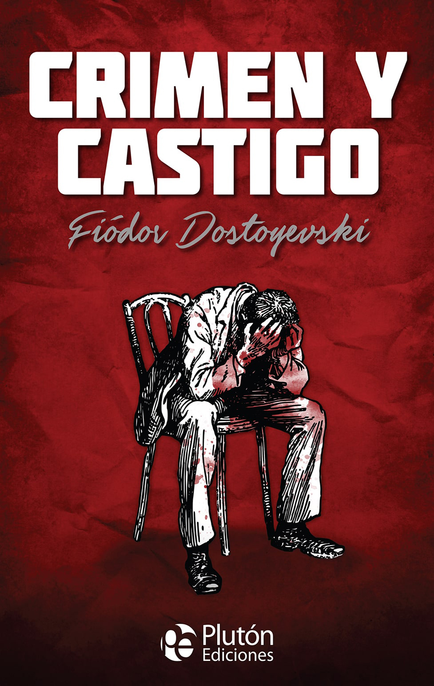

01
VIDEOVideo 1 · Learning in action
Audiovisual entry from my English learning process.
Watch on YouTube ↗Servicio Nacional de Aprendizaje · SENA
Training group / Ficha 3185908
Deyci Yulieth Vásquez Bedoya
A creative collection of my learning process in English, connecting communication, logistics, critical thinking and personal development.
Explore my posts ↓WELCOME
This blog brings together different activities developed during my training process. Each entry represents an opportunity to practice English, communicate ideas and connect learning with my interests, professional goals and everyday life.
MY POSTS
Videos · Mind map · Chronicle · Email · Critical thinking · Crime & punishment
Audiovisual entry from my English learning process.
Watch on YouTube ↗A second audiovisual entry showing my progress and use of English.
Watch on YouTube ↗My learning environment connects goals, English skills, strategies, ICT tools and learning resources.
A chronicle about José María Acevedo and the logistics vision behind Haceb.
A formal email applying for a Logistics Process Coordinator position.
Why should we question information before believing and sharing it?
A short reflection about the novel, its main character and the consequences of his actions.

FINAL REFLECTION
Through these activities I have strengthened my ability to communicate in English, organize ideas, reflect on social topics and relate language learning to logistics and my professional future.
My Personal Learning Environment organizes the resources, tools, strategies, goals and skills that support my English learning and professional development.
The original SENA mind map is available as a PDF.
Open original PDF ↗José María Acevedo was born in Medellín in 1919 and started working at a young age. His experience led him to create Taller Eléctrico Medellín in 1940, the seed of what would become Haceb.
His story highlights the importance of supply continuity, strategic inventory, distribution networks, packaging and transportation. He understood that having a product ready was not enough if it did not arrive on time.
This chronicle connects his entrepreneurial story with a logistics perspective: suppliers, production, distribution and service must work together to create value.
Open original PDF ↗Subject: Application for the position of Logistics Process Coordinator – Operadora Avícola S.A.S
Dear Human Resources Department of Operadora Avícola S.A.S,
I am writing to formally apply for the position of Logistics Process Coordinator. I believe I can contribute thanks to my education and skills in logistics processes, planning, control, optimization, inventory management and supply chain coordination.
I am a responsible, proactive and adaptable person, committed to teamwork and organizational goals. I can offer commitment, efficiency and results orientation.
Thank you for your attention. I look forward to your response.
Sincerely,
Deyci Yulieth Vásquez Bedoya
In my opinion, critical thinking is very important because we receive a lot of information every day. Not everything we see on the internet or on social media is true.
Before I believe or share something, I should check the source, compare the information with other pages and think about the purpose of the message. Media literacy helps me understand news, images and videos in a more responsible way.
For me, the main idea is simple: think before you share. This can help us make better decisions and avoid false information.

Crime and Punishment is a novel written by Fyodor Dostoevsky. The story is about Raskolnikov, a poor young student who believes that some people are above the law. Because of this idea, he commits a crime.
After the crime, he feels fear, guilt and confusion. He tries to hide what he did, but his conscience becomes stronger. The story shows that actions have consequences and that it is difficult to live in peace after hurting another person.
I think the novel teaches us about responsibility, guilt and the importance of accepting our actions. It also makes us think about justice and the difference between what we believe is right and what is really right.